Narrative Technologies· prediction, surprise, empathy and other modes of experience
qhchina.org
01
Poly-temporal, multi-layered
Narrative experience unfolds over many interlocking timescales at once, and is processed through a hierarchy of layers, in brains and in language models alike.
Kurzynski, “Poly-Temporal, Multi-Layered: A Techno-Cognitive Theory of Narrative Experience in Literature,” IJHAC 19.1 (2025): 33–48
Interpretation as a function
f(x; w, b) = wx + b
a model: an input, parameters, an output
f(“Hello, how are”; θ) = “you”
a language model: the parameters θ are learned from text
Hello, how are you
youtheywe
f(text; History) = interpretation
literary history (wen-shi yanjiu 文史研究): a text is read in light of a historical narrative
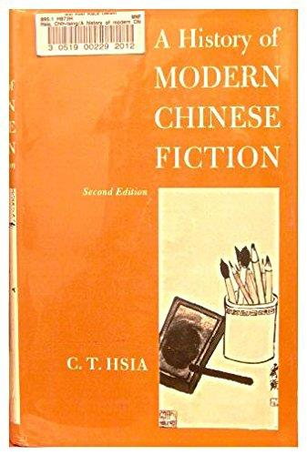
C. T. Hsia, A History of Modern Chinese Fiction (1961)
f(text; History, ?) = interpretation
so the question is: what other parameters should we take into account?
Literature as a record of History
“The modern Chinese writer sees himself or herself as an observer and recorder of the truth about Chinese society.”
C. T. Hsia, A History of Modern Chinese Fiction (1961)
“It is the mutual illumination between wen (literature) and shi (history) that underlies my editorial vision.”
David Der-wei Wang, A New Literary History of Modern China (2017)
How might we write about literature beyond the limits of historiography?
How can embodied, affective, and cognitive frameworks complement historicist readings?
How do we model literature as both a historical and an embodied phenomenon?
What are the viable alternatives to genealogical thinking?
How do we rescue literature from history?
Prasenjit Duara, Rescuing History from the Nation (1995)
Polytemporality
“Some of my genes are 500 million years old, others 3 million, others 100,000 years, and my habits range in age from a few days to several thousand years.”
Bruno Latour, We Have Never Been Modern (1993), 73
“Elements that are contemporary according to the calendar need not belong to the same time.”
Latour, 73
Texts as technologies
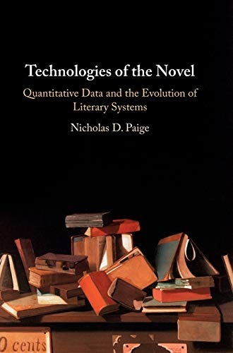
“Explaining changes in the literary record by reaching for the most proximate extraliterary event or for abstract historical developments – the “liberal subject,” the “Enlightenment project,” “market capitalism” – simply won’t do. Literary forms are not produced by some sort of magical sympathy with the historical moment that might be seen as “resembling” them.They are fashioned and refashioned by people. This, I believe, is where a technological understanding of literature comes in.”
Nicholas Paige, Technologies of the Novel (2020), 181
“The novel isn’t really one thing that is evolving. The novel is a system of other objects … the evolution of systems and the individual artifacts that compose them may not be the same evolution.”
Paige, 184
Technologies capture phenomena
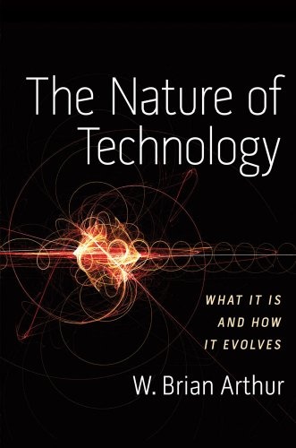
“Technologies, all technologies, are combinations … each component of technology is itself in miniature a technology.” And in essence, “a technology is a phenomenon captured and put to use. Or more accurately … a collection of phenomena captured and put to use.”
W. Brian Arthur, The Nature of Technology (2009)
“Literary texts inherit human variability … At the same time, like the human mind, they exhibit regularities that emerge at the statistical level.”
James Carney, “The Space between Your Ears”
If literary forms are technologies, the phenomena they capture include the reader’s own embodied cognition.
The brain keeps many clocks
Temporal receptive windows lengthen along the cortical hierarchy: sensory areas integrate over milliseconds, language networks over seconds, the default mode network over minutes. Hasson et al. 2008; Chang, Nastase, and Hasson 2022; Hasson 2025
Slow waves carry fast ones. The three clocks add up in one signal. “Infra-slow waves are of tsunami size … superfast oscillations are just ripples riding on the vortex of the slower waves.” Buzsáki, The Brain from Inside Out (2019), 151
A timescale hierarchy
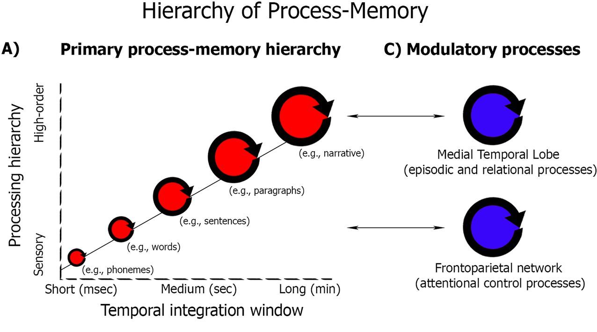
Uri Hasson, “Uncovering a Timescale Hierarchy by Studying the Brain in a Natural Context,” J. Neurosci. 45.12 (2025)
Temporal receptive windows lengthen along the cortex: milliseconds for phonemes, seconds for sentences, minutes for paragraphs and whole narratives. Hasson et al. 2008; Chang, Nastase, and Hasson 2022
Fast layers overlap in time. Listening to stories, the brain holds the last three speech sounds in parallel, long after they fade; they activate earlier when predictable. Gwilliams et al., Nat. Commun. 2022
Slow rhythms govern fast ones. “Perturbations at slow frequencies inevitably affect all nested oscillations.” Buzsáki, The Brain from Inside Out (2019), 151
Timescales along the cortex
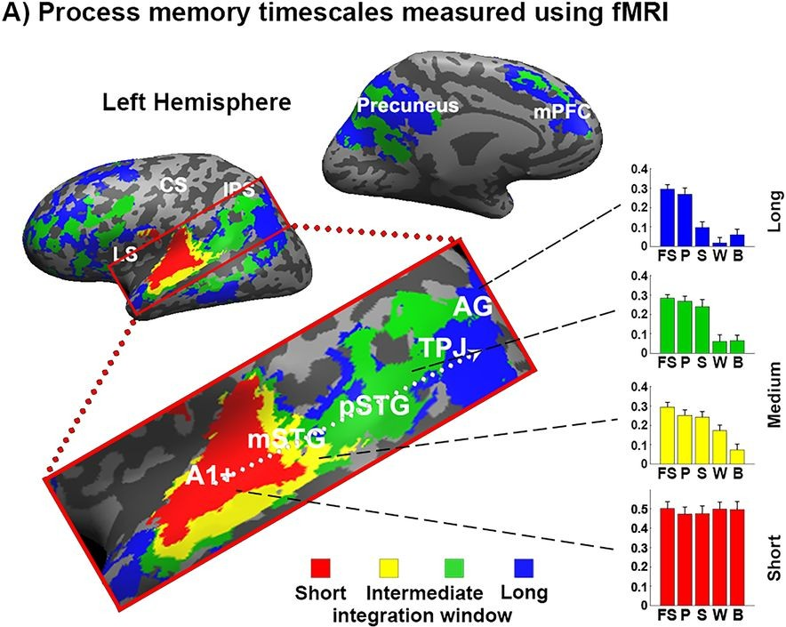
Uri Hasson, “Uncovering a Timescale Hierarchy by Studying the Brain in a Natural Context,” J. Neurosci. 45.12 (2025), Fig. 1; adapted from Hasson et al. (2015)
Short windows (red, early auditory cortex) respond reliably across listeners even to speech played backward.
Intermediate windows (yellow, green) need intact words, then intact sentences.
Long windows (blue: temporal-parietal junction, angular gyrus, precuneus, medial prefrontal cortex) respond reliably only when the paragraphs and the whole story are intact.
Further up the hierarchy, more and more of the story so far shapes the present moment.
Sequence versus hierarchy
A sequence is a list in a fixed order: each node links to one next node and one previous node. To get from a to d you must pass b and c: three steps.
A hierarchy adds a parent: x is linked to every node below it, so that some node has more than one child, and each node has a single parent.
Distant nodes come closer. From a hierarchical perspective a and d are only two steps apart (a–x–d).
The boy who fed the dog chased the girl. “Who chased the girl?” points to the boy. The dog is closer to “chased” in the sequence, but farther away in the hierarchy.
Adapted from Julia Uddén et al., “Hierarchical Structure in Sequence Processing: How to Measure It and Determine Its Neural Implementation,” Topics in Cognitive Science 12.3 (2020). Kurzynski, “Poly-Temporal, Multi-Layered,” IJHAC 19.1 (2025), Fig. 1a; links from x to all lower nodes added.
Hierarchy reduces uncertainty
Fibonacci grammar: 0 → 1 1 → 0 1
Start from a single 0 and rewrite every symbol, again and again. Each generation grows out of the one above.
Now forget the tree and read only the seventh generation, left to right. How predictable is each symbol?
Predict symbol by symbol. Every 0 is followed by a 1, so those 1s are certain (green). But after a 1 either symbol can follow: those cells stay red.
Climb one level: merge each 0 with the 1 after it into a chunk [0 1]; the other 1s stay alone as [1]. After a lone [1] the next chunk is always[0 1]: fully certain. After another [0 1] we cannot know it is coming: the chunk stays partly probabilistic, a red 0 and then a green 1.
Climb again. The same rule one level up: after the short chunk the long chunk always follows (fully green). Otherwise the chunk keeps the colours of what it contains.
Three levels of merging. Fewer symbols are uncertain at every level: 13, then 8, 5 and 3 of 21.
“Uncertainty is reduced as the hierarchical structure of the signal is built.”
Fibonacci grammar and quotation: Schmid, Saddy, and Franck, Cognitive Science (2023).
Three predictive loops in reading
Loop 1: the character. What the characters experience and expect inside the story. A detective finds a mysterious letter.
Loop 2: the storyworld. The reader’s model of the fictional world and the likely events in it. The reader predicts that the letter is a crucial clue.
Loop 3: the real world. The reader’s predictions drawn from life and from other books. Knowing mystery stories, the reader anticipates danger or deception.
The loops interact hierarchically, shaping both what characters do and how readers expect and feel. But there are probably many more loops, modulated by affect, and many of them cannot be put into words.
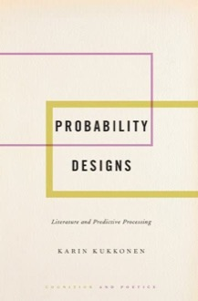
Karin Kukkonen, Probability Designs (2020)
Kukkonen, “Bayesian Bodies: The Predictive Dimension of Embodied Cognition and Culture,” in The Cognitive Humanities (2016); Kurzynski, “Poly-Temporal, Multi-Layered,” IJHAC 19.1 (2025), 38.
Language models as layered readers
An encoder transforms a text again and again through many layers, each aggregating wider, more abstract information.
A linear sequence of symbols becomes a hierarchical conceptual representation.
Early layers of a speech model align with auditory cortex; deeper layers with higher-level language regions.
Models and brains converge
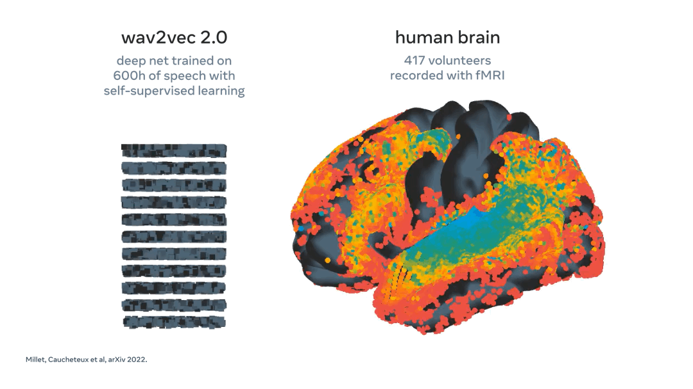
Millet et al., “Toward a Realistic Model of Speech Processing in the Brain with Self-Supervised Learning” (2022)
The layers line up with the cortex. In a speech model trained on 600 h of audio, early layers match auditory cortex, deeper layers higher-level language areas.
What drives the match is prediction. Across many models and 102 participants, brain-likeness “primarily depends on their ability to predict words from context,” and peaks in middle layers. Caucheteux and King, Commun. Biol. 2022
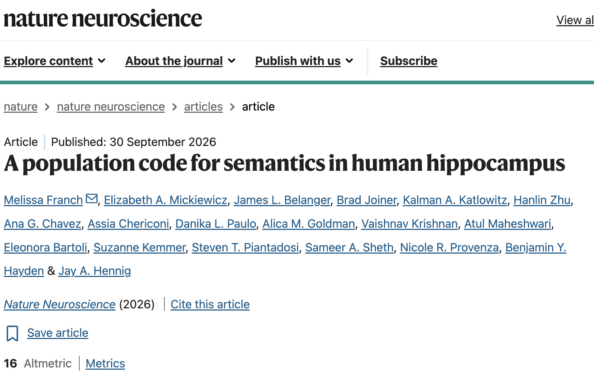
Franch et al., “A Population Code for Semantics in Human Hippocampus,” Nature Neuroscience (2026).
Meaning as a population code
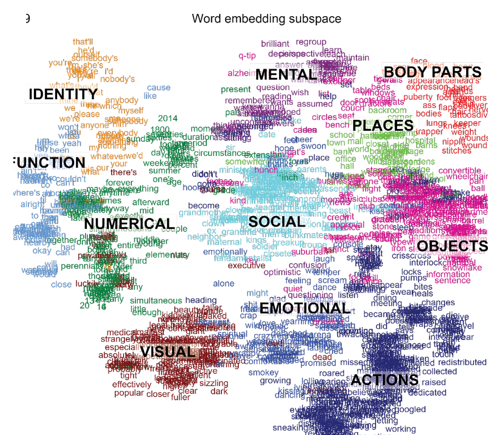
Words from the stories as embedding vectors, coloured by category (Fig. 1j)
Recording. Ten epilepsy patients listened to 47 minutes of spoken stories (7,346 words) while 356 single neurons were recorded in the hippocampus.
Meaning is encoded. A word’s embedding vector predicts firing in most neurons, better than its phonemes, and even after controlling for grammar.
And it is distributed. One word is carried by about 37 neurons; one neuron responds to several unrelated words. Meaning lives in the pattern across neurons, not in a neuron per word.
Franch et al., “A Population Code for Semantics in Human Hippocampus,” Nature Neuroscience (2026); preprint doi 10.1101/2025.02.21.639601.
Neural distance mirrors semantic distance
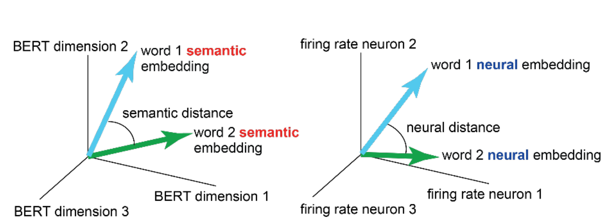
Fig. 3a–b
Same geometry. A word is a vector in the model and a vector of firing rates across neurons. Across 27 million word pairs, closer meaning means a more similar population pattern.
Only if the model reads context. BERT and GPT-2 show the effect; static Word2Vec does not. The same word evokes different patterns in different contexts, most for polysemous words.
Meaning in context. The code represents a word relative to its sentence, much as a language model does.
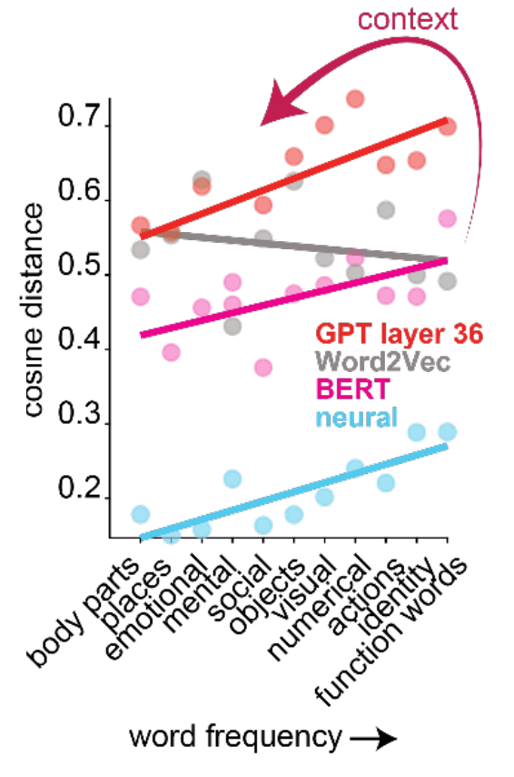
Fig. 3l: context pulls the model’s distances toward the neural ones
Franch et al., “A Population Code for Semantics in Human Hippocampus,” Nature Neuroscience (2026).
The hermeneutic circle, reimagined
The hermeneutic circle (Schleiermacher, Dilthey, Heidegger, Gadamer): we understand a text’s parts through the whole, and the whole through its parts. Interpretation never starts from nothing; each reading revises the expectations it began with.
Feedback runs the other way. Higher layers send expectations back to lower ones, as when signals from V5 return to V1 in the visual cortex: what we have already understood changes how the next words are read.
Most hermeneutic causality stays unverbalised: patterns of activation (infratextuality) rather than symbolic sequences (intertextuality). Linearization leaves measurable traces too: sentences being typed can be decoded from non-invasive MEG. Lévy et al., Nat. Neurosci. 2026
Adapted from Kurzynski, “Poly-Temporal, Multi-Layered,” IJHAC 19.1 (2025), Fig. 3.
A ladder for the classroom
Context · timescale
Reading question
Character, wordmilliseconds
What does this word mean here, next to that one?
Line, sentenceseconds
What did I expect to come next, and why was I surprised?
Passage, storyminutes – hours
What holds steady, and what keeps changing?
Corpus, erayears – centuries
What persists across political ruptures?
What is context? Which context are we in? Which context do we choose?
02
Case studies
Poems, novels, and propaganda read with, and against, language models: what the machine’s layers and expectations can make visible to a literary reader.
2.1
A novel in layers
A novel, read as a model would encode it: what stays stable across the book, and what changes from sentence to sentence.
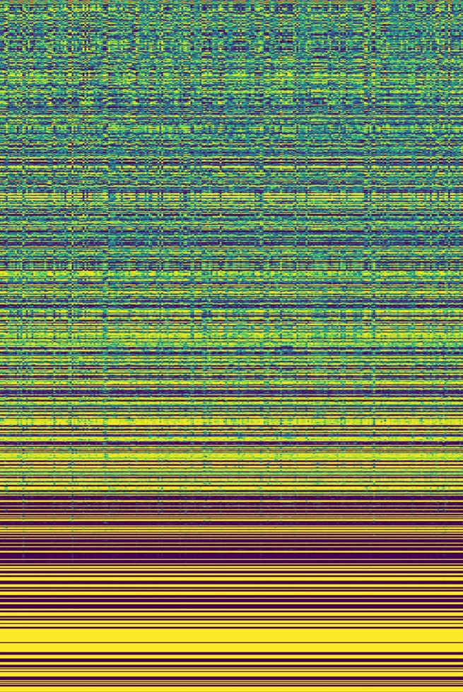
0% · rows = 768 dimensions
100% of the novel →
A gradient of stability
Zhang Xianliang 張賢亮, Half of Man is Woman 《男人的一半是女人》 (1985): 255 fragments × 500 characters, each encoded by BERT-base-Chinese into 768 dimensions.
Rows are dimensions, sorted from most to least variable across the novel.
Fast rows change with nearly every fragment: words, phrases, single scenes.
Slow rows hold for the whole book: voice, perspective, register.
Each band may call for its own predictive loop. Reading means tracking all of them at once.
The only sounds were the winds and reeds whispering like lovers. In no hurry to put on clothes, she dropped the underwear still in her hand. As if afraid of getting cold, she crossed one arm over the other. With a hand on each of her shoulders, she stood there facing me. In the wind, the sun’s rays turned a soft yellow color. In that soft yellow light, her body shone. […] Strong enough to knock me out, an instinctive self-preservation took hold. At the same time, in her eyes, on her rippling skin, I saw a frightening pain. I saw the tragedy covering both of us.Her thirst and her hunger were my own—she was a mirror to me. Into the desire to possess her came the equally male desire to protect her.My physical need disappeared, in its place was a mental ache.The sharp sound of a whistle pierced the air from far away. It lashed my body like a whip, and I turned and ran.
Brevity and BreadthCai & Kurzynski · JCLC 11.2 (2024)
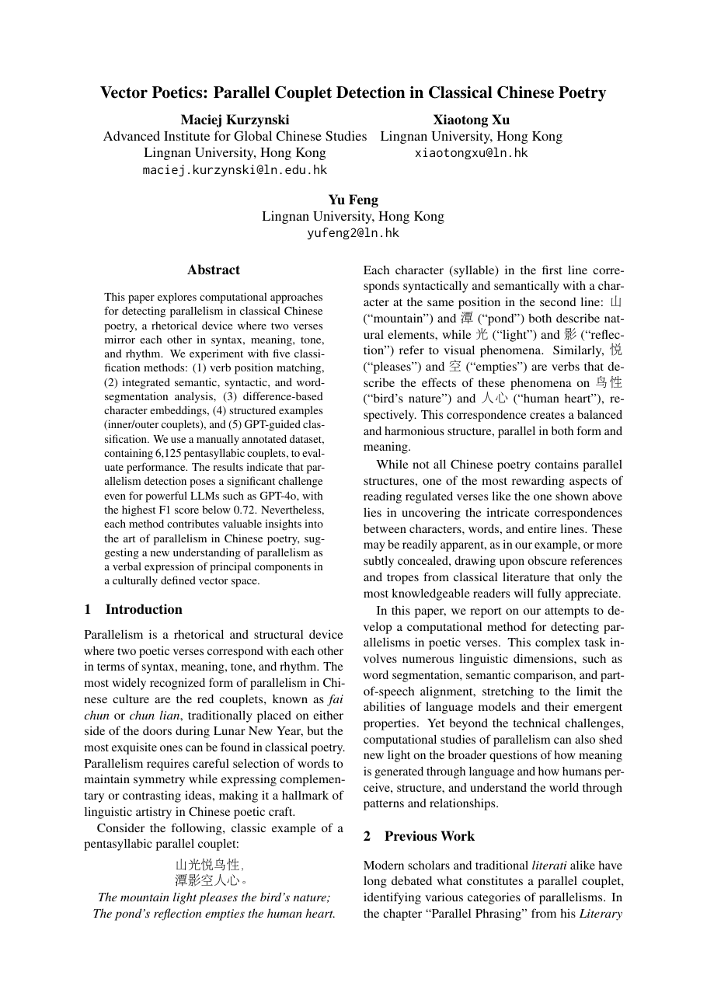
Vector PoeticsKurzynski, Xu & Feng · NLP4DH 2024
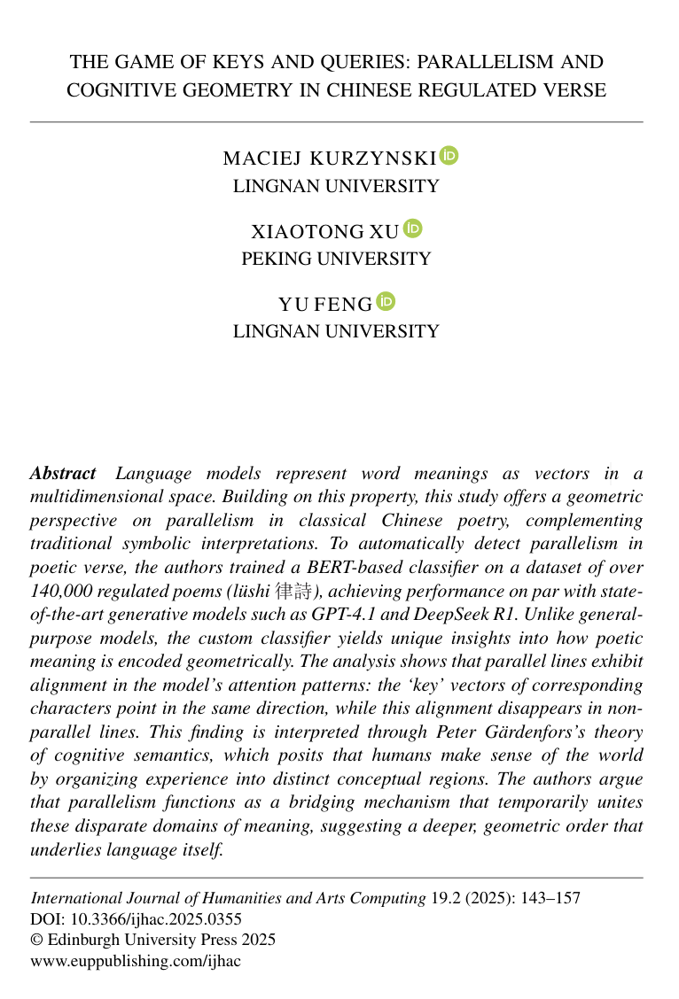
The Game of Keys and QueriesKurzynski, Xu & Feng · IJHAC 19.2 (2025)
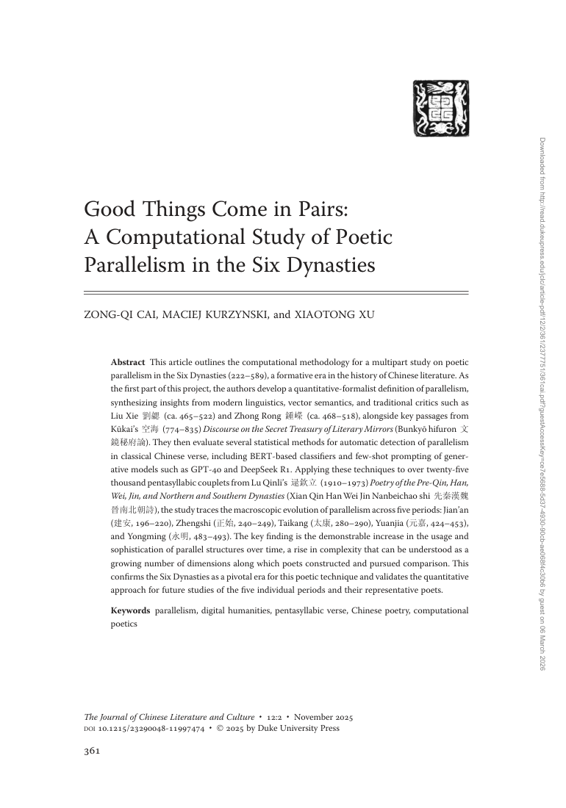
Good Things Come in PairsCai, Kurzynski & Xu · JCLC 12.2 (2025)
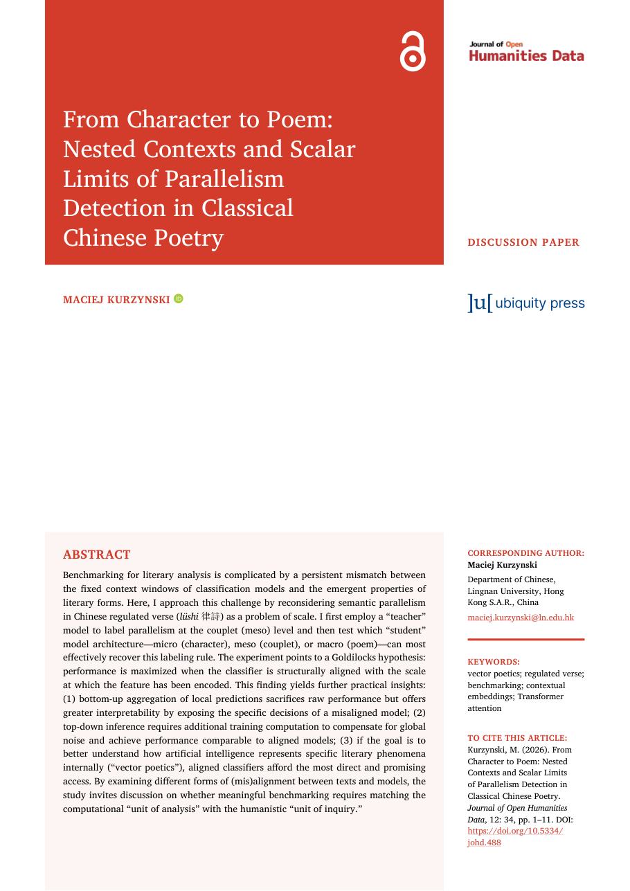
From Character to PoemKurzynski · JOHD 12 (2026)
Wang Wei 王維 (699–761), 山居秋暝
首聯空山新雨後，天氣晚來秋。In the empty mountains after fresh rain, evening air turns autumn.
頷聯明月松間照，清泉石上流。The bright moon shines between the pines; a clear spring flows over the stones.
頸聯竹喧歸浣女，蓮動下漁舟。Bamboo rustles: washerwomen head home; lotus stirs: a fishing boat sets out.
尾聯隨意春芳歇，王孫自可留。Spring’s fragrance may fade as it pleases; the noble guest is free to stay.
Regulated verse
Eight lines, four couplets, and strict rules of form.
The middle two couplets must be parallel. This is a formal requirement of the genre: line against line, word for word. 頷聯 · 頸聯
The opening and closing couplets are free. They may be parallel, but they do not have to be.
Parallelism 對仗duìzhàng
“When the mind gives birth to words, thoughts go through a hundred reflections, and the high and low complement each other, naturally forming pairs.”
夫心生文辭，運裁百慮，高下相須，自然成對。
Liu Xie 劉勰 (465–522), The Literary Mind and the Carving of Dragons 文心雕龍
In classical Chinese poetry, two lines are matched word for word. Wang Wei 王維, Autumn Evening in the Mountains:
明月松間照，清泉石上流。
The bright moonshinesbetween the pines; a clear springflowsover the stones.
Is this couplet parallel?
In regulated verse (律詩), two lines that pair up word for word are “parallel”. A classifier reads a couplet and returns a probability.
Wang Wei 王維 (699–761), 山居秋暝 Autumn Evening in the Mountains
空山新雨後，天氣晚來秋。In the empty mountains after fresh rain, evening air turns autumn.
明月松間照，清泉石上流。The bright moon shines between the pines; a clear spring flows over the stones.
→classifier→0.97
竹喧歸浣女，蓮動下漁舟。Bamboo rustles: washerwomen head home; lotus stirs: a fishing boat sets out.
隨意春芳歇，王孫自可留。Spring’s fragrance may fade as it pleases; the noble guest is free to stay.
→classifier→0.02
SikuBERT, a BERT-based classifier fine-tuned on couplets from 140,000+ regulated poems (律詩), performs on par with GPT-4o and DeepSeek R1.
How well does it work?
Test set: 6,153 pentasyllabic couplets from the Six Dynasties (222–589), labelled by hand: 2,072 parallel, 4,081 not.
Method
Accuracy
Precision
Recall
F1
Earlier methods
VM
76.5
72.3
55.0
62.5
ISSA
72.5
68.2
48.0
56.3
ED
75.9
72.0
53.6
61.4
Fine-tuned SikuBERT
I/O (couplet position as label)
79.1
69.9
72.7
71.3
I/O + SymNet (filtered labels)
84.0
74.1
82.2
77.9
Generative models
GPT-4o
79.6
73.7
64.4
68.8
Moonshot AI (v1-8k)
79.1
71.2
65.7
68.3
DeepSeek R1
84.8
82.9
70.0
75.9
A small fine-tuned encoder matches the large generative models, and finds the most parallel couplets (recall 82.2%).
Cai, Kurzynski, and Xu, “Good Things Come in Pairs: A Computational Study of Poetic Parallelism in the Six Dynasties,” Journal of Chinese Literature and Culture 12.2 (2025), Appendix 2.
Bai Juyi 白居易 (772–846), 賦得古原草送別 Grass on the Ancient Plain: Farewell to a Friend
離離原上草，一歲一枯榮。Lush is the grass on the plain; each year it withers, each year it thrives.
野火燒不盡，春風吹又生。Wildfire cannot burn it out; the spring wind blows and it grows again.
遠芳侵古道，晴翠接荒城。The distant fragrance invades the ancient road; the bright green meets the ruined town.
又送王孫去，萋萋滿別情。Again I see my friend off; the teeming grass is full of parting sorrow.
Scale matters
Which amount of context is best for this task?
Micro · character pairs. Is comparing two characters at a time enough?
Meso · couplet. Does a couplet, a pair of lines, provide enough information?
Macro · whole poem. Do we need additional context from the entire poem?
The Goldilocks result
Same task, same poems: which context best recovers the parallelism judgement?
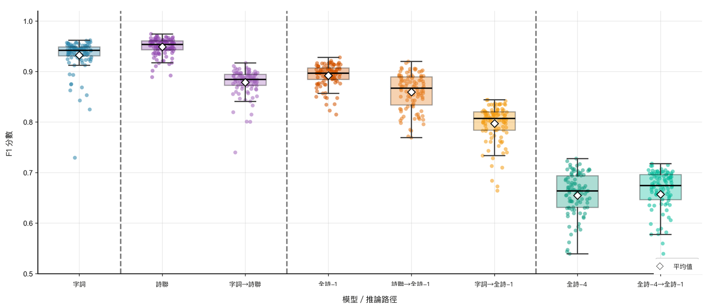
Character: pairs of characters
Couplet: two lines together
Poem-1: the whole poem, one label
Poem-4: the whole poem, four labels
A → B: trained at scale A, then applied at scale B (same colour family as A).
The best context is not the largest but the one aligned with the scale at which the feature is encoded.
Kurzynski, “From Character to Poem: Nested Contexts and Scalar Limits of Parallelism Detection in Classical Chinese Poetry,” Journal of Open Humanities Data 12 (2026): 34, Fig. 4.
Context as a methodological choice
Interpretability (Rudin 2019): the decision itself is transparent and can be traced back to specific predictions.
Explainability: post-hoc techniques generate approximations (explanations) of the model’s behaviour.
MICRO · CHARACTER PAIRS
Transparent, but blind to syntax
Interpretable by design: every couplet verdict traces back to five separate pair judgements, so you can see where it goes wrong.
Cost: it cannot see the sentence, so ambiguous characters trip it up (the lexical gap; F1 0.88).
MESO · COUPLET
Aligned, and open to explanation
Explainable after the fact: probing the model shows attention and key vectors lining up across parallel lines, a glimpse of how it represents the feature.
Cost: an approximation of what the model does, not a transparent decision (F1 0.95).
MACRO · WHOLE POEM
Rich in context, opaque in reasoning
Hard to interpret: a verdict might rest on syntax, the author’s style or the rhyme scheme, and the model can lean on shortcuts such as “inner couplets are always parallel”.
Cost: the structural shadow of the whole over the part (F1 0.89 and 0.66).
Choosing the context turns a silent assumption into an explicit and contestable methodological choice.
Kurzynski, “From Character to Poem: Nested Contexts and Scalar Limits of Parallelism Detection in Classical Chinese Poetry,” Journal of Open Humanities Data 12 (2026): 34, Fig. 4.
The geometry of “parallelism”
The English word comes from the Greek parallelos, “side by side”: a spatial image. The Chinese terms are just as spatial.
對仗duìzhàngthe symmetrical formation of ceremonial processions
對偶duì’ǒua pair of people ploughing side by side
駢文piánwéntwo horses harnessed abreast
These images have become dead metaphors. If parallelism is a spatial relation, perhaps we can measure it in a space.
Vector semantics
Every word becomes a list of numbers: a point, an arrow. Words used alike sit close together, and a relation is a direction.
Vector poetics. A language model places every line in a high-dimensional space. Parallelism becomes a question of geometry: are the two verses laid out side by side?
Kurzynski, “Jakobson’s ‘Poetic Function’ in Vector Space: Parallelism, Cognitive Geometry, and Classical Chinese Verse,” EADH 2026.
Keys, queries and [CLS]
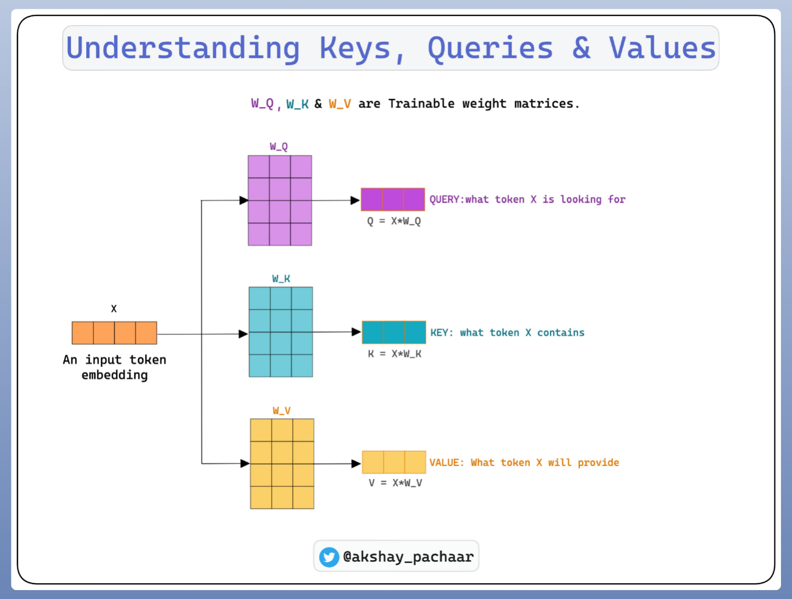
Diagram: @akshay_pachaar
Every token embedding is multiplied by three learned matrices. The result: a query (what this token is looking for), a key (what it contains) and a value (what it will provide).
Attention is a match: the more a key points in the same direction as the query, the more that token is attended to.
[CLS] is a special token placed at the start of every input. Its query asks the whole sentence a question, and its final vector is what the classifier reads. So we watch what [CLS] attends to.
What happens inside the classifier?
The game of keys and queries
ATTENTION OF [CLS], ONE HEAD
first line
second line
00.5
Drag the red query. Each character offers a key; the more a key points the same way as the query, the brighter its square. Point the query between a pair, and corresponding characters light up together: 松 and 石, 照 and 流.
Adapted from Kurzynski, Xu, and Feng, “The Game of Keys and Queries,” IJHAC 19.2 (2025), Fig. 1.
What does [CLS] attend to?
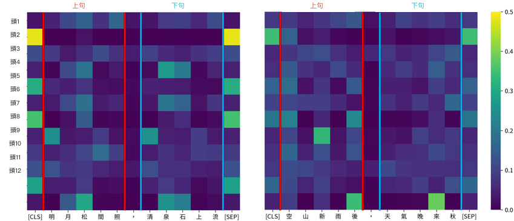
How to read it. Each row is one attention head. Each column is a character of the couplet, first line then second line. Brighter means more attention from [CLS].
Left, a parallel couplet: the two lines show a mirrored pattern: matching characters offer similar keys, so they answer [CLS]’s query alike. Right, a non-parallel couplet: the pattern is not mirrored.
Kurzynski, Xu, and Feng, “The Game of Keys and Queries,” IJHAC 19.2 (2025), Fig. 2.
Matching characters respond alike
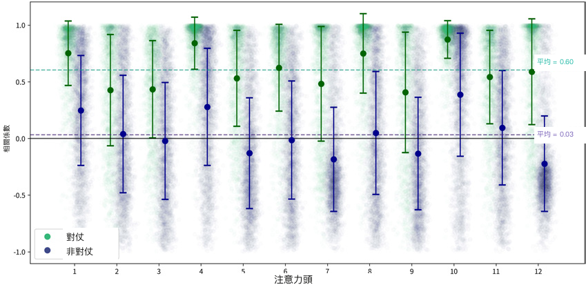
The test. In each head, do line one and line two get attention in the same pattern? One dot is one couplet; 1.0 means an identical pattern.
The result. Across 5,178 test couplets, parallel couplets score higher than non-parallel ones in every head: matching characters offer similar keys as answers to [CLS]’s query.
Kurzynski, Xu, and Feng, “The Game of Keys and Queries,” IJHAC 19.2 (2025), Fig. 3.
The same pattern in a whole poem
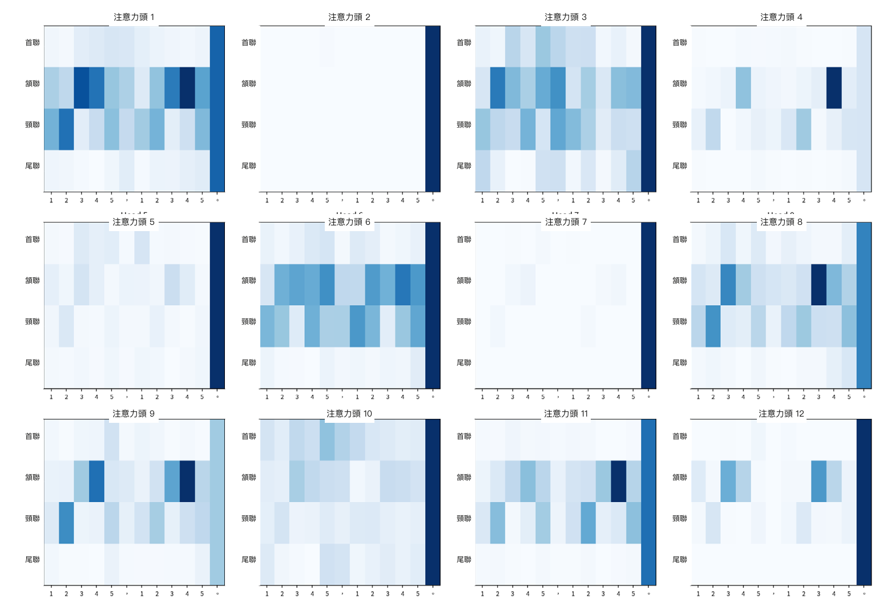
The task. Here the classifier reads a whole poem, four couplets, and gives one yes/no label: is it a “regulated” poem (律詩) or not?
How to read it. Each panel is one attention head, each row a couplet, each column a character or punctuation mark. Darker means more attention from [CLS].
What it learns. Nobody tells the model where to look, yet it attends mostly to the inner couplets (rows 2 and 3), the two that must be parallel in a regulated poem.
Head 1, top left: the parallel third couplet draws attention at the same positions in both lines. Punctuation marks work as “attention sinks”, a place to park attention.
Kurzynski, “From Character to Poem: Nested Contexts and Scalar Limits of Parallelism Detection in Classical Chinese Poetry,” Journal of Open Humanities Data 12 (2026): 34, Fig. 5.
What does “aligned” look like?
Read each verse as a path through a 3D meaning space, one character at a time. At each step, ask: do the two paths move in the same direction?
Misaligned
Aligned
Misaligned. Each verse wanders its own way: the steps of the two paths point in different, often opposite, directions.
Aligned. Matching steps point the same way: the two verses move in parallel, which is what parallelism means geometrically.
Alignment builds up layer by layer
Transition alignment: from one character to the next, do the two verses step in the same direction? (1 = exactly the same)
It grows with depth, from low in the first layer to high in the last. The dashed line is the baseline for random pairs.
And it follows the form. Jaw and neck, which must be parallel, rise far above the baseline; the tail, which is exempt, stays close to it.
GujiBERT_fan · 25,000 five-character couplets per position · couplets encoded as wholes
Does the model need to see both verses?
An experiment with one couplet, 明月松間照，清泉石上流 (“The bright moon shines between the pines; a clear spring flows over the stones”). We feed it to the model in two ways and compare the ten resulting points.
Separately
the model sees one verse at a time
明月松間照→BERT→●●●●●清泉石上流→BERT→●●●●●
Together
the model sees the whole couplet, so each verse can see the other
明月松間照，清泉石上流→BERT→●●●●●●●●●●
Same ten characters, same model. The only difference: whether each verse can see the other. What happens to the points?
03案例二：對仗
明月松間照，清泉石上流
The bright moon shines between the pines; a clear spring flows over the stones.
Mean cosine between the two verses’ step vectors (each character → the next), computed in the model’s full 768 dimensions. The 3D picture is only a PCA view.
Verse one, on its own. Feed 明月松間照 to BERT by itself: its five characters trace a path through 3D space.
Verse two, on its own. 清泉石上流, encoded separately, traces a different path.
Both in one space, same positions. Read apart, the paths wander independently: nothing ties 明 to 清, or 月 to 泉.
Now read the couplet together. The same ten characters, but each verse can see the other: the points glide, the paths line up, and the pairs (bright–clear, moon–spring, pines–stones, between–over, shines–flows) pull together.
Parallelism is not in the characters. It appears only when the verses see each other, and it builds up in the top layers.
drag to rotate · scroll to zoom · [] layer · R auto-rotate · 0 reset
Language discretizes, parallelism reconnects
Experience is continuous. A conceptual space is built from quality dimensions such as colour, size or force.
Language discretizes it. The space is cut, region by region, into convex cells: a Voronoi tessellation.
The central point of each cell is a prototype, and a word names the region.
Parallelism bridges regions. It pairs words from separate regions (moon–spring, pines–stones, wind–water) along a shared dimension, momentarily gesturing towards the undifferentiated unity beneath the divisions.
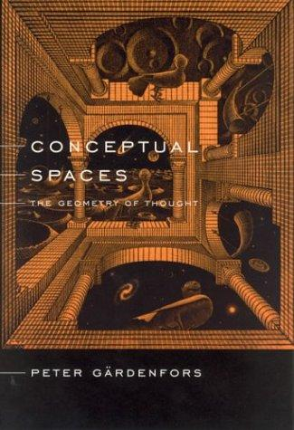
Peter Gärdenfors, Conceptual Spaces: The Geometry of Thought (2000)
Gärdenfors, Conceptual Spaces (2000) and The Geometry of Meaning (2014); Kurzynski, Xu, and Feng, IJHAC 19.2 (2025); Kurzynski, EADH 2026.
Sense trajectories
池邊樹影接，峯外月華生。
By the pond the tree shadows meet; beyond the peak the moon’s glow is born.
① the character’s general sense across the corpus
② read in its own line
③ read with line 2, next to 峯 “peak”
Where does 池 “pond” go when it meets 峯 “peak”? Does a new meaning emerge from the meeting? What common dimensions connect them? A question we are working on.
Take a novel. Find every word that names a part of the body, 手 眼 心 脑…, and paint it onto a silhouette. Darker means more mentions per 10,000 words.
Jin Ping Mei (Ming): head, hands, mouth and whole-body words lead, with the heart close behind.
Dream of the Red Chamber (Qing): head and heart dominate; eyes and hands are quieter.
The Muslim Funeral (1991): a warmer body overall, with heart, eyes, face and hands all “hot”.
Every novel gets a silhouette. How is one made, and what happens inside a novel as it unfolds?
How do we count a body?
1 · A WORD LIST
Words that name a part of the body, sorted into 22 regions:
Hands手 指
Head & hair头 发
Whole body全身 皮骨血
Heart心
Eyes眼 眉 泪
Face脸 腮
Mouth口 唇 舌 齿
Inner organs脏腑
Feet脚
Legs腿 膝
Chest胸 乳
Neck颈 喉
Shoulders肩
Arms臂 腕
Waist腰
Ears耳
Brain脑
Genitals阴
Belly腹
Buttocks臀 股
Nose鼻
Back背
2 · A RATE
Count every mention in the novel and divide by its length: mentions per 10,000 words, so long and short books compare.
3 · A MOVING WINDOW
Slide a window of about 5,000 words along the novel. Each window gets its own colouring of the body.
Only body words are counted here. Feeling enters later, with a second method that also asks which emotion sits beside each body part.
Reading a novel as it unfolds
Slide a 5,000-word window along a novel and recolour the body. Press Play (or P), or click the map to jump.
Rows: body regions (core seven on top). Columns: 5,000-word windows. Darker red: more mentions per 10,000 words.
A novel about a family’s fall
紅樓夢Dream of the Red Chamber · Cao Xueqin 曹雪芹, mid-18th century
The most celebrated Chinese novel. Over 120 chapters it follows the Jia family, a great household of wealth and privilege, through its splendour and its decline. Feeling is everywhere: weeping, blushing, sighing, laughing behind a hand.
賈寶玉 Jia Baoyu
The young heir, sensitive, who turns away from the world of exams and duty.
林黛玉 Lin Daiyu
His frail and gifted cousin, a poet, famous for her tears.
王熙鳳 Wang Xifeng
The sharp-tongued manager of the household.
Chapters 1–80 are by Cao Xueqin; chapters 81–120 are usually credited to a later editor, Gao E, and carry the family to its ruin. Keep this three-part shape in mind: we will compare the parts.
Bodies that feel
A second method on the same novel: it reads sentence by sentence with two word lists. Emotions: five basic ones, each with about 20 words (joy: 喜 笑 乐; anger: 怒 气 恼; sadness: 哭 泪 悲; fear: 怕 慌 惧; surprise: 惊 愣 诧). Body parts: 27, from 心 and 脸 to 手 and 足. When a sentence holds both, it counts one hit for that body part and that emotion.
Dream of the Red Chamber, all 120 chapters: 4,586 hits. Colour is the leading emotion of each body part, brighter means more hits. The heart (1,192) leads, then head, face, mouth, hand and eyes: exactly the regions that dominate our silhouettes.
Joy is the leading emotion (36% of hits), then anger (24%) and sadness (23%); fear is 12%, surprise 5%. Nearly half of all hits sit in the heart and head.
Word-list method applied to Cao Xueqin, Dream of the Red Chamber. Dictionary matching within a sentence: co-occurrence, not a judgement of what the body part expresses.
The same body, three parts of the novel
Chapters 1–40
Joy 44%, sadness 19%. The heart carries 24% of all hits.
Chapters 41–80
Joy 41%, sadness 19%. Almost unchanged.
Chapters 81–120
Joy falls to 24%, sadness rises to 31%, and the heart carries 32%.
A stable layer and a changing one, again. The same six body parts lead in every part of the book (heart, head, face, mouth, hand, eyes); what changes is the feeling they carry, as the fortunes of the Jia family decline.
Word-list method, Dream of the Red Chamber. Bar: share of joy, sadness, fear, anger and surprise hits.
Whose body?
黛玉 · Lin Daiyu · 546 hits
The saddest body of the three: 27% sadness, and the least anger (18%).
宝玉 · Jia Baoyu · 909 hits
The most hits, and the most surprise (8%): 38% joy, 24% sadness, 20% anger.
凤姐 · Wang Xifeng · 456 hits
The angriest body: 24% anger, and hardly any surprise (2%).
The core is shared, the colour is individual: each character has an emotional profile written into the body parts the novel gives them.
Word-list method, Dream of the Red Chamber. Name variants are merged (黛玉/林黛玉, 凤姐/凤姐儿).
Five eras, one body
The whole corpus: 279 novels from Ming–Qing to the New Era. Colour: mentions per 10,000 words, scaled within each era.
The same seven regions lead in every era (hands, head, whole body, heart, eyes, face, mouth): together 79–83% of body words, with a clear gap before the eighth. Change happens at the margins: the brain rises, the inner organs recede.
A layer that shifts: the brain arrives
is nearly absent before 1911 (0.3 per 10k words) and rises 7× by the socialist era (2.1).
Thought moves house: “in the heart” () holds steady, while “in the head” () goes from 0.1 to 1.2.
A faster layer, tied to the era: a new vocabulary for where mind lives in the body.
Many clocks in one body
WHAT THE MACHINE COUNTSWHAT A READER CAN ASK
CENTURIES
The same core. The same seven regions carry 79–83% of body words in every era.
Why does the core stay put? Is it the body itself, or the conventions for describing it?
DECADES
An era’s own layer. The brain arrives in the socialist era: 0.3 to 2.1 per 10,000 words.
Does thought move from the heart to the head in modern Chinese fiction?
A SINGLE BOOK
Feeling that moves. In Dream of the Red Chamber, sadness gathers in the heart as the family falls; each character has a different profile.
Does grief gather in the heart as a household declines? Is temperament written into a body?
Stability is several layers moving at different speeds. AI does not replace the question: it widens the evidence, and sends you back to the text. Check the dictionary too: joy is 36% of the hits here, and a different word list would give a different share.
2.4
Prediction
What can we learn from what a language model expects to read next?
Literature and expectation
READING AS PREDICTION
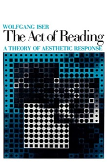
a “wandering viewpoint” projects expectations the next sentence confirms or frustrates
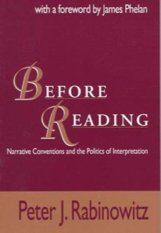
rules of reading are “basically predictive” and “always probabilistic”
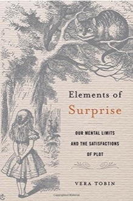
the well-made surprise: unexpected now, a better reading in hindsight
the text as a “designed sensory flow” of small, purposeful failed expectations
EXPECTATION ORGANIZED TOO WELL
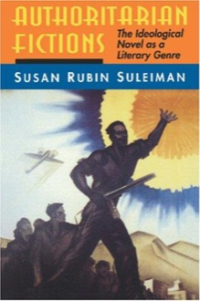
authoritarian fictions: form makes the conclusion feel inevitable
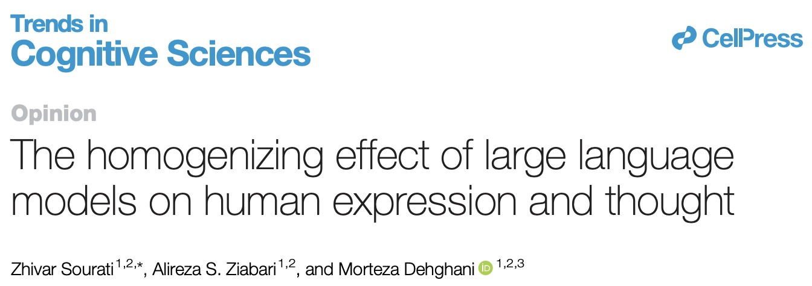
next-word training favours frequent patterns: a homogenizing loop, and the risk of “epistemic collapse”
the socialist literary system; linguistic engineering in Mao’s China
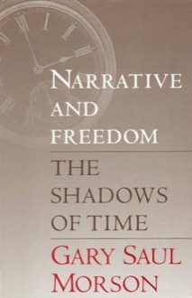
the counterforce (Bakhtin; Morson): polyphony, sideshadowing, paths not taken
What comes next?
Last night I finished the final chapter.
It is a very interesting ?
surprise at book: perplexity 4.2
PPL=exp(−n1i=1∑nlogQ(xi∣x<i))
A perplexity of 5: on average, like choosing among 5 equally likely options. Lower is less surprised.
probabilities illustrative
Prediction: a genealogy
Prediction is not a natural feature of mind or language but a regime with a datable formation, one that now organizes how we build machines, theorize brains, and read texts.
Prediction meets defamiliarization
“How well can the next letter of a text be predicted when the preceding N letters are known?”
Claude Shannon, “Prediction and Entropy of Printed English” (1951)
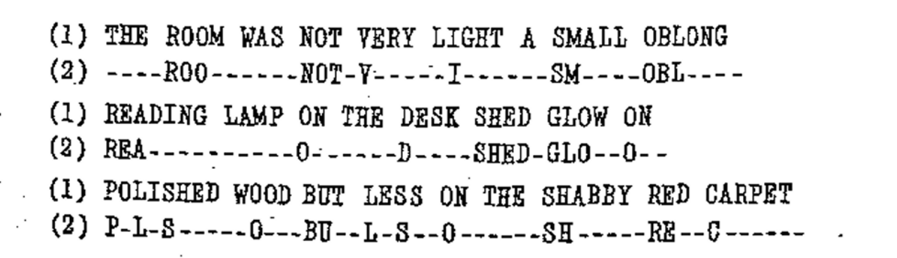
Shannon’s experiment: a reader guesses the next letter, one at a time. Dashes mark letters guessed right away; only surprises are spelled out.
“Art … increases the complexity and duration of perception.”
Viktor Shklovsky, “Art as Device” (1917)
“The technique of art is to make objects ‘unfamiliar’, to make forms difficult, to increase the difficulty and length of perception.”
Shklovsky, ostranenie, “defamiliarization”
“Art exists that one may recover the sensation of life; it exists to make one feel things, to make the stone stony.”
Shklovsky, “Art as Device”
Cognitive stylometry takes Shannon’s question literally: a language model trained on a particular corpus stands in for a historically situated reader, and a text is measured as an interplay of familiarity and surprise.
Portraits: Tekniska museet (CC BY 2.0); Wikimedia Commons (public domain). Shannon 1951, Bell System Technical Journal 30.1, p. 54.
Simulating a historical reader
THE MODEL
A small GPT223M parameters, one token per character
坚决、彻底、干净、全部地消灭 “resolutely, thoroughly, wholly, and completely annihilate”: four stacked adverbs surprise the base model and become automatic after fine-tuning.
地、富、反、坏、右 “landlords, rich peasants, counter-revolutionaries, bad elements, Rightists”: nonsense to the base model, a canonical list after five epochs.
苏修叛徒集团 “the Soviet revisionist renegade clique”: Cold War jargon, massive spikes that collapse epoch by epoch.
The first character surprises; the rest cascades with near-certainty. Maospeak narrows the space of valid continuations.
yellow: base model · orange → red: fine-tuning epochs 1–5 · perplexity on a log scale
Zhang Wei 張煒, The Ancient Ship 古船 (1987). A speech at a struggle session. Only the Maoist slogan 舍得一身剐，敢把皇帝拉下马 (“dare to pull the emperor off his horse, even if it means being hacked to pieces”) loses perplexity: the model finds the Maospeak embedded in the novel.
Lilian Lee 李碧華, Farewell My Concubine 霸王別姬 (1985). Spikes on figurative juxtapositions (凶狠地打哈欠, “a ferocious yawn”) and classical phrasings (堂堂男子 “a man of standing”, 机会安在 “where is the chance?”), which grow more surprising as the model absorbs Maospeak.
Dung Kai-cheung 董啓章, Works and Creations 天工開物·栩栩如真 (2005). Unannounced Cantonese breaks the arc: 嗰次系我第一次听到空中既声音 (“that was the first time I heard a sound in the air”). Out of distribution for standard-Chinese corpora, it “puts the brakes on perception.”
light: base model · dark: fine-tuning epochs 1–5 · perplexity on a log scale
Meaning is backgrounded through repetition. Everything is familiar: cognitive overfitting.
NOISE · ALL SURPRISE
Anomalous surprise: with no familiar ground, there is nothing to recognize the surprise against.
LITERATURE · GROUND + FIGURE
A familiar rhythm broken by surprises the reader can still recognize once they arrive: non-anomalous surprise.
Literature does not defamiliarize by simply being surprising. It defamiliarizes by combining the surprising with the familiar in a new way. That particular arrangement of ground and figure is a text’s cognitive signature, and what counts as familiar depends on the reader’s history.
“Aesthetic pleasure results from the predictability of the non-focally processed rhythmic cycles in combination with the non-anomalous surprise of the focally processed melody.”
Patrick Colm Hogan (2016)
Kurzynski, “Cognitive Stylometry,” Computational Humanities Research 2 (2026): e1.
Next steps: nested prediction
So far we have measured prediction one word at a time. Texts are predicted at many scales at once.
Sentences and passages. How predictable is the next sentence, the next paragraph, the next scene, given everything before it?
Nested prediction. Expectations are built inside expectations: a word inside a sentence, a sentence inside a chapter, a chapter inside a book.
How authors play with scale. A text can be familiar in its words and surprising in its structure, or the reverse.
Still to do: models and measures for prediction across scales.
Prisons of autocomplete
9:41●●●
AAlex
↑
OPPORTUNITY New questions: where does a text differ from what was expected? Cheap experiments on whole corpora, and a second reader whose layers can be opened.
DANGER The machine follows the paths most often travelled through language. Read with it, we begin to finish our own sentences: an autocomplete of the mind.
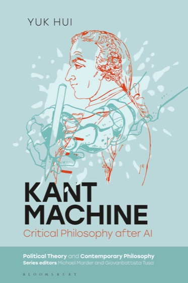
“…is escaping from this prison of probabilities, or more precisely, calculability, now humanity’s primary task?”
Yuk Hui, Kant Machine: Critical Philosophy after AI (2026), 14
Determinative judgement applies a rule already given: prediction does this well. Reflective judgement finds a rule for a case no existing rule covers: prediction cannot.
Read against the grain. Ask where the probable continuation fails, and which corpus it was calibrated on. In the classroom, treat surprisal as evidence about the training distribution, not a verdict on literary quality.
cf. Leif Weatherby, Language Machines (2025). Yuk Hui, Kant Machine (2026), reading Kant’s third Critique as a “treatise on cybernetics”.
Notes on method
NOT THIS
Using literature to research a tool
Send a few prompts, score the model, then repeat the test when the next model appears. The benchmark ages with the model.
THIS
Using a tool to research literature
The question stays with the texts. A new model is a new instrument for seeing what is already there.
We are interested in language models only insofar as they tell us something new about literature. Findings about the texts outlast any particular model; findings about the model do not.
03
Practical session
A note on method, then how to set up an AI coding agent, and finally our example: building a research tool with one.
We need to choose two things
1 · The assistant (“harness”)
The app you talk to. It reads your files, writes code, runs it.
VS Code: local, or in the browser as a Codespace, with a chat panel (Copilot or an extension).
OpenCode: open source; terminal or desktop app; works with almost any model provider.
Codex (OpenAI) and Claude Code (Anthropic): not available in Hong Kong, but: pay with Google Pay, VPN, non-HK credit card.
2 · The model and its provider
The model does the thinking. An API key connects it to the assistant; treat it like a password.
Local (Ollama, LM Studio): runs on your own computer. Private and free, but needs strong hardware and the models are smaller. Very good for simple data extraction.
External (OpenRouter, Poe, OpenCode Go, or the makers’ own APIs): many models, one key, pay per use or by subscription.
We use VS Code + Copilot, but we bring our own API key: OpenRouter with GLM-5.3-Flash.
Before you start: pitfalls
Public and school computers are locked down. You cannot install Python, Git or VS Code. Use GitHub Codespaces in the browser; everything is already inside it. github.com/codespaces
OpenCode in a Windows terminal is a pain. Install errors, command not found. In Codespaces it just works; otherwise use the desktop app.
Register GitHub with a personal email, not a school one that expires. Then apply for GitHub Education: up to 180 Codespaces core-hours a month. education.github.com
Delete your Codespace when you finish. An idle one keeps using your hours. Push first: anything not pushed is lost.
GitHub Education · education.github.comCode → Codespaces → Create codespace on main
We asked a coding agent to build a website that maps emotions onto the body in a novel, and then met everything that went wrong.
The tool. Counts literal organ ↔ emotion descriptions (羞紅了臉 “her face flushed with shame”, 心中歡喜 “joy in the heart”) and paints them on an anatomical figure: colour is emotion, shade is strength, click an organ to read the passages.
The setup. One prompt of ten requirements, written in plain language, to a coding agent (GLM-5.3 Flash; later DeepSeek for the repairs). No programming background assumed.
One prompt
AS SENT, TRANSLATED
I need you to build a human-figure website that analyses the correspondence between emotions and organs in a text and shows it on a scientific anatomical figure, with colour for the emotion and shade for the strength. I do not know the difference between front-end and back-end, but only people I give the link to should be able to open it. It should work in English and Traditional Chinese, and I should be able to upload novels as .txt at any time. Count literal descriptions only: 羞紅了臉 counts for the face. Every organ should be clickable to show its passages; every book, chapter and character gets its own figure, with side-by-side comparisons like medical cross-sections. If you do not understand something, ask me directly; do not interpret it on your own.
Explicit, checkable requirements mostly worked: file paths, upload, chapter menu, click-to-read, language switch. The failures came from what the prompt left unsaid.
Where the agent went wrong
PRIVACY
Too clever
Asked for a private link, got a local Flask server, an encrypted tunnel to the internet, and a secret token in the URL.
LANGUAGE
Two scripts, one interface
Traditional Chinese was requested, but the novel itself was in Simplified: the result mixed both.
INTERPRETATION
Forced pairings
Literal matching links unrelated organs and emotions, and segmentation errors produce “organs” that are not body parts.
VISUAL DETAIL
“Like medical slices” was not enough
It worked once the request was a precise mechanism: “magnify the area under the cursor with a normal-distribution-like profile.”
One vague sentence, many errors
The instruction: “merge different names for the same character into one.” It did not say who is the same person, or how to tell.
WHAT CAME BACK
鳳姐 and 鳳姐兒 still two people
林黛玉 and 黛玉 still two people
Names that do not exist: 賈母笑 · 寶玉忙 · 寶玉便
Pronouns as characters: 叫我 · 有人
WHAT FIXED IT: HUMAN KNOWLEDGE, WRITTEN INTO THE CODE
An alias table: 林黛玉→黛玉 · 鳳姐兒→鳳姐 · 王熙鳳→鳳姐 · 老太太→賈母
A verb-ending blacklist: 笑 哭 嘆 忙 便
Pronoun stopwords, and merging the data as well as the names
Result: thirty characters, no duplicates, no noise.
What we learned
01
Vague in, guessed out
“Ask me if you don’t understand” only works if you are the one asking. The agent rarely asks back; it quietly guesses.
02
The agent executes; you judge
“Who is the same person?” is literary knowledge. It cannot be inferred from the text and must come from the reader.
03
Checking beats generating
A human sees at once that “賈母笑” is not a person. The agent never notices.
The literary reader is not made redundant by the agent. Close reading is how the output gets verified.

 VS Code: local, or in the browser as a Codespace, with a chat panel (Copilot or an extension).
VS Code: local, or in the browser as a Codespace, with a chat panel (Copilot or an extension). OpenCode: open source; terminal or desktop app; works with almost any model provider.
OpenCode: open source; terminal or desktop app; works with almost any model provider. Codex (OpenAI) and
Codex (OpenAI) and  Claude Code (Anthropic): not available in Hong Kong, but: pay with Google Pay, VPN, non-HK credit card.
Claude Code (Anthropic): not available in Hong Kong, but: pay with Google Pay, VPN, non-HK credit card. Local (Ollama, LM Studio): runs on your own computer. Private and free, but needs strong hardware and the models are smaller. Very good for simple data extraction.
Local (Ollama, LM Studio): runs on your own computer. Private and free, but needs strong hardware and the models are smaller. Very good for simple data extraction.